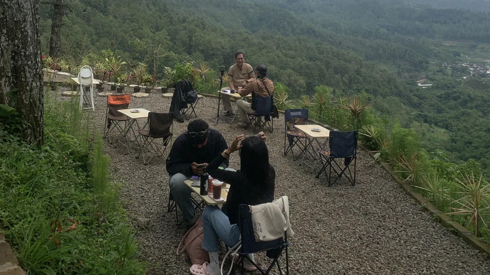

Daftar Isi
Mengorganisir kegiatan luar ruangan untuk kelompok besar seperti organisasi kampus, komunitas hobi, atau instansi perusahaan memiliki tantangan tersendiri. Salah satu faktor penentu keberhasilan acara tersebut adalah pemilihan lokasi yang tepat. Mencari area ground tenda luas untuk acara organisasi di wilayah Batu Malang bukan hanya soal mencari tanah lapang, tetapi juga tentang fasilitas pendukung, keamanan, dan suasana yang mampu membangkitkan semangat kebersamaan para anggotanya.
Kawasan Batu Malang sejak lama dikenal sebagai kiblat kegiatan luar ruangan di Jawa Timur. Namun, tidak semua lokasi memiliki kapasitas yang cukup untuk menampung puluhan hingga ratusan orang sekaligus dalam satu hamparan. Penting bagi panitia untuk memastikan bahwa lokasi yang dipilih memungkinkan semua peserta berada dalam satu jangkauan pandangan (line of sight) guna memudahkan koordinasi dan pengawasan kegiatan.
Kriteria Utama Ground untuk Kelompok Besar
Dalam praktiknya, area ground tenda luas untuk acara organisasi harus memiliki kontur tanah yang stabil dan sistem drainase yang baik. Sebagai praktisi yang sering berada di lapangan, kami sering melihat acara menjadi kacau karena ground yang becek saat hujan turun. Di Batu Sunrise Camp, kami telah melakukan pengelolaan lahan secara profesional agar permukaan tanah tetap nyaman digunakan meski dalam kondisi cuaca yang menantang. Hal ini krusial untuk menjaga mood peserta agar tetap positif sepanjang acara berlangsung.
Selain faktor lahan, aspek logistik dan sanitasi menjadi hal yang tidak bisa ditawar. Sebuah organisasi yang membawa banyak personel tentu membutuhkan ketersediaan toilet yang memadai dan akses air bersih yang lancar. Kami selalu menekankan bahwa kenyamanan dasar adalah fondasi dari keberhasilan sesi pengembangan kepemimpinan atau team building. Tanpa itu, materi kegiatan sehebat apa pun tidak akan terserap maksimal oleh peserta karena mereka merasa tidak nyaman secara fisik.
Fleksibilitas Outbound dan Pembagian Zona
Memanfaatkan area ground tenda luas untuk acara organisasi juga memberikan fleksibilitas bagi panitia untuk merancang berbagai jenis permainan lapangan (outbound). Ruang gerak yang bebas memicu kreativitas dan partisipasi aktif. Di Batu Sunrise Camp, luas lahan yang tersedia memungkinkan pembagian zona, misalnya zona tenda untuk istirahat, zona aula terbuka untuk materi, dan zona lapang untuk simulasi permainan kelompok. Pembagian zona ini sangat membantu dalam menjaga keteraturan alur acara.
Pemilihan ground yang terlindungi oleh vegetasi atau pohon-pohon besar di sekelilingnya akan sangat membantu memecah angin (windbreaker) dan menstabilkan suhu di dalam tenda.
Wawasan lokal yang perlu diketahui para ketua organisasi adalah mengenai karakteristik angin di Batu. Karena berada di ketinggian, angin pada malam hari bisa cukup kencang. Oleh karena itu, pemilihan ground yang terlindungi oleh vegetasi atau pohon-pohon besar di sekelilingnya akan sangat membantu memecah angin (windbreaker). Hal ini membuat suhu di dalam area tenda menjadi lebih stabil dan tidak terlalu ekstrem, sehingga risiko kesehatan peserta seperti masuk angin atau hipotermia ringan bisa diminimalisir.

Reservasi Area Ground Sekarang!
Dapatkan lahan luas dan fasilitas lengkap untuk kesuksesan acara organisasi Anda.
Chat Admin SekarangEfisiensi Anggaran dan Keakraban Malam
Kami mengerti bahwa anggaran seringkali menjadi pertimbangan utama dalam sebuah organisasi. Namun, memilih area ground tenda luas untuk acara organisasi yang dikelola secara profesional sebenarnya adalah bentuk efisiensi. Dengan fasilitas yang sudah lengkap dan tim lapangan yang sigap membantu, panitia tidak perlu lagi menyewa banyak vendor tambahan. Segalanya sudah terintegrasi dalam satu manajemen yang paham betul bagaimana dinamika sebuah kelompok besar saat berkegiatan di alam.

Momen kebersamaan keluarga yang hangat di pagi hari tanpa gangguan gawai, mempererat koneksi di alam terbuka.
Suasana di malam hari juga menjadi momen krusial. Area yang luas memungkinkan pembuatan api unggun besar sebagai pusat kegiatan malam keakraban. Bayangkan seluruh anggota melingkar, berbagi cerita, dan mempererat ikatan emosional di bawah langit malam Batu yang penuh bintang. Momen-momen seperti inilah yang biasanya menjadi puncak dari sebuah acara organisasi, di mana rasa solidaritas tumbuh secara alami melalui pengalaman kolektif.
Ekosistem Pendukung untuk Visi Organisasi
Sebagai pengelola Batu Sunrise Camp, kami selalu siap memberikan konsultasi terkait layout tenda dan alur kegiatan agar efisiensi penggunaan lahan bisa maksimal. Pengalaman kami menangani berbagai skala organisasi, mulai dari organisasi mahasiswa hingga serikat pekerja nasional, memberikan kami perspektif tentang apa yang benar-benar dibutuhkan di lapangan. Kami bukan sekadar menyewakan lahan, tapi kami menyediakan ekosistem pendukung untuk kesuksesan visi dan misi organisasi Anda.
Pada akhirnya, tujuan utama dari setiap kegiatan luar ruangan adalah membawa pulang semangat baru dan hubungan yang lebih kuat antar anggota. Memilih area ground tenda luas untuk acara organisasi di Batu Malang adalah langkah awal yang sangat strategis. Dengan suasana pegunungan yang asri, fasilitas yang mumpuni, dan manajemen yang berpengalaman, acara Anda bukan hanya sekadar berkumpul, melainkan sebuah transformasi positif bagi seluruh peserta. Segera rancang agenda besar Anda dan pastikan setiap detailnya tertangani dengan profesional.